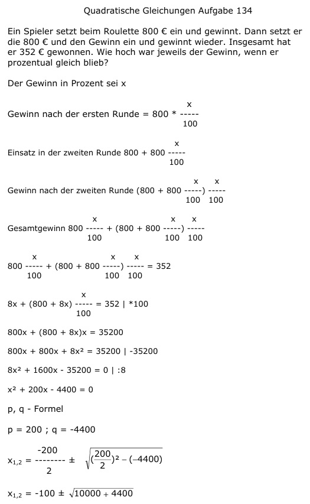

Aufgabe 134 Ein Spieler setzt beim Roulette 800 € ein und gewinnt. Dann setzt erdie 800 € und den Gewinn ein und gewinnt wieder. Insgesamt hat er 352 € gewonnen. Wie hoch war jeweils der Gewinn, wenn er prozentual gleich blieb? Der Gewinn in Prozent sei x x Gewinn nach der ersten Runde = 800 * ----- 100 x Einsatz in der zweiten Runde 800 + 800 ----- 100 Gewinn nach der zweiten Runde x x (800 + 800 -----) ----- 100 100 x x x Gesamtgewinn 800 ----- + (800 + 800 -----) ----- 100 100 100 x x x 800 ----- + (800 + 800 -----) ----- = 352 100 100 100 x 8x + (800 + 8x) ----- = 352 |*100 100 800x + (800 + 8x)x = 35200 800x + 800x + 8x2 = 35200 |-35200 8x2 + 1600x - 35200 = 0 | :8 x2 + 200x - 4400 = 0 p, q - Formel p = 200 ; q = -4400  x1,2 = -100 ± 120 x1 = -100 + 120 = 20% x2 = -100 - 120 = - 220 keine Lösung 20 Gewinn nach der ersten Runde 800 ----- = 160 € 100 Gewinn nach der zweiten Runde 20 20 (800 + 800 -----) ----- = 100 100 (800 + 160) * 0,2 = 960 * 0,2 = 192 €.